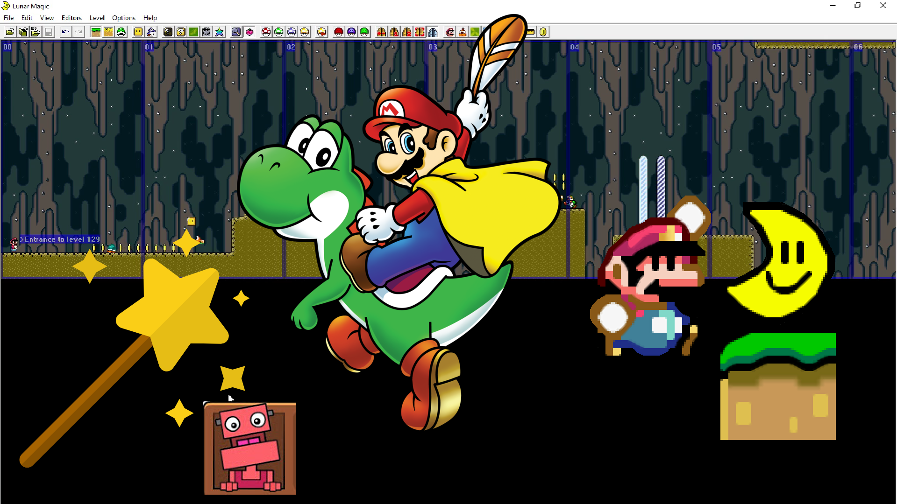

(Old) Wish Video 1 - How To ROM Hack Super Mario World Using Lunar Magic **MAKE EPIC ROM HACKS**

An earlier version of Wish Video 1 - How To ROM Hack Super Mario World Using Lunar Magic **MAKE EPIC ROM HACKS** that has multiple issues that forced me to fix them up and reupload the video. I kept this to archive the comments.